5.3.1. Основные определения
5.3.1. Основные определения
Наряду с асимметричными шифрами, реализованными с использованием модульной арифметики в поле натуральных чисел, существует множество криптографических алгоритмов принадлежащих к классу асимметричных криптосистем, реализованных в поле точек эллиптической кривой. Это позволяет использовать гораздо меньшую длину ключа (меньше в 3−5 раз), по сравнению с традиционной реализацией, при обеспечении одинакового уровня криптостойкости.
Многие криптографические алгоритмы, особенно принадлежащие к классу асимметричных криптосистем, основаны на выполнении математических операций в конечных полях натуральных чисел по модулю большого простого числа. При этом такие поля не единственные алгебраические структуры, в которых можно реализовать указанные алгоритмы. В 1985 году Миллером и Коблицем было предложено использовать для построения криптосистем алгебраические структуры, определенные на множестве точек эллиптической кривой, образующих аддитивную группу.
Эллиптической кривой E над полем P называется множество точек 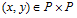, удовлетворяющих уравнению 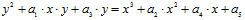.
Операция сложения, определенная на множестве точек эллиптической кривой, позволяет построить абелеву группу точек вместе с дополнительной точкой в бесконечности. Для этого кривая должна быть непрерывной (гладкой) в каждой точке. Типовые графики непрерывных эллиптических кривых (вычисленные без использования модуля) показаны на рис. 5.9.
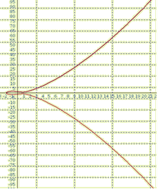 |
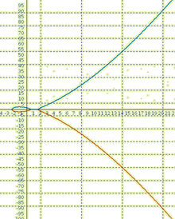 |
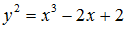 |
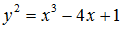 |
Рис. 5.9. Примеры эллиптических кривых |
|
Уравнение эллиптической кривой может рассматриваться над различными конечными полями. В криптографии рассматриваются эллиптические кривые над полями нечетной характеристики 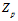 , где p > 3 – простое число и над полями характеристики 2, 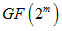. Для полей нечетной характеристики уравнение эллиптической кривой сводится к виду: 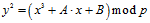 , где константы A, B такие, что 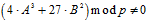. Это требование необходимо для исключения эллиптических кривых с особыми точками (пересечениями и экстремумами).
Для полей характеристики 2 рассматривают два вида эллиптических кривых:
− суперсингулярные вида 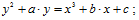
− несуперсингулярные вида 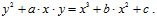
Особое удобство суперсингулярных эллиптических кривых в том, что для них легко вычислить порядок, в то время как вычисление порядка несуперсингулярных кривых вызывает трудности.
Вместо общего уравнения эллиптической кривой, как правило, рассматривают некоторые подмножества этого общего уравнения, мы ограничимся рассмотрением кривых вида 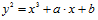 над полем по модулю большого простого числа и их использованием при построении асимметричных криптосистем.
Пусть p > 3 − простое число, и 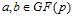 такие, что  .
.
Эллиптической кривой называется множество решений (x, y) уравнения над полем  , вместе с дополнительной точкой, называемой точкой в бесконечности 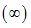 и выполняющей роль нейтрального элемента в группе (иначе говоря нулевого элемента).
, вместе с дополнительной точкой, называемой точкой в бесконечности 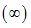 и выполняющей роль нейтрального элемента в группе (иначе говоря нулевого элемента).
Группа точек на эллиптической кривой является аддитивной и групповая операция в ней определяется следующим образом:
1) ;
2) 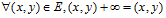сумма точи 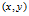с точкой в бесконечности 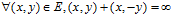;
3) 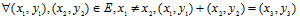
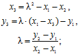
4) 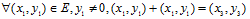
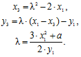
Множество точек с заданной таким образом групповой операцией образует аддитивную абелеву группу. Операция сложения точек эллиптической кривой 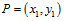, 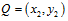, 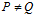 геометрически интерпретируется как точка 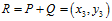, противоположная третьей точке пересечения эллиптической кривой линией, проходящей через точки P и Q (рис. 5.10). В случае, когда выполняется сложение двух одинаковых точек P, результатом будет равна точка R, противоположная точке пересечения касательной к кривой в точке P и эллиптической кривой (рис. 5.10).
Количество точек в группе эллиптической кривой можно оценить с помощью теоремы Хассе, которая гласит: количество точек на эллиптической кривой вычисляется как 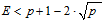или 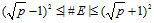. Если 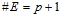, то такая кривая называется суперсингулярной.
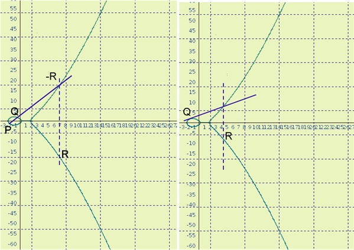 |
Рис. 5.10. Сложение точек эллиптической кривой: слева − сложение двух разных точек; справа − двух одинаковых |
Пользуясь определенной на эллиптической кривой операцией сложения точек эллиптической кривой, можно определить операцию умножения точки эллиптической кривой P на число n как 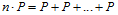, где операция сложения выполняется n раз. Эта операция является аналогом операции возведения в степень в мультипликативной группе и используется для ее замещения в криптографических алгоритмах.
Пусть E – эллиптическая кривая, 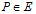 − точка на этой кривой. Выберем целое число 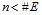, в качестве прямой функции используем произведение  , обратная задача, а именно вычисление n по заданному произведению 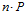 является трудной математической задачей, которая имеет экспоненциальную сложность решения и аналогична сложности задачи дискретного логарифмирования.
, обратная задача, а именно вычисление n по заданному произведению 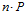 является трудной математической задачей, которая имеет экспоненциальную сложность решения и аналогична сложности задачи дискретного логарифмирования.
При этом, операции вычисления скалярного произведения и сложения точек более имеют большую вычислительную сложность, чем соответствующие операции при дискретном логарифмировании.
Порядком точки эллиптической кривой называется наименьшее число k, такое, что 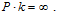Нахождение точного порядка точки эллиптической кривой − сложная задача, при этом в некоторых алгоритмах, например ЭЦП с использованием эллиптических кривых, необходимо точное знание порядка точки эллиптической кривой.
Рассмотрим пример эллиптической кривой. Кривая 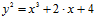 приведена на рис. 5.11. На нем изображен график данной кривой на участке (-2, 50) и соответствующая ему группа точек дискретной эллиптической кривой, заданной уравнением 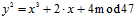.
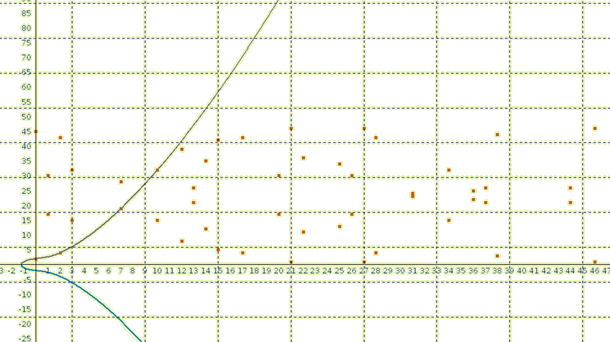 |
Рис. 5.11. График непрерывной и дискретной эллиптической кривой |
Значения точек дискретной кривой приведены в табл. 5.3.
Таблица 5.3
Значения точек эллиптической кривой 
№ |
(x, y) |
№ |
(x, y) |
№ |
(x, y) |
№ |
(x, y) |
№ |
(x, y) |
1 |
0,2 |
11 |
34,32 |
21 |
17,43 |
31 |
44,26 |
41 |
14,12 |
2 |
12,39 |
12 |
25,34 |
22 |
15,42 |
32 |
20,17 |
42 |
22,36 |
3 |
37,21 |
13 |
28,43 |
23 |
13,26 |
33 |
7,28 |
43 |
27,46 |
4 |
31,24 |
14 |
26,17 |
24 |
21,46 |
34 |
2,4 |
44 |
38,44 |
5 |
1,17 |
15 |
10,32 |
25 |
3,32 |
35 |
46,46 |
45 |
36,25 |
6 |
36,22 |
16 |
46,1 |
26 |
3,15 |
36 |
10,15 |
46 |
1,30 |
7 |
38,3 |
17 |
2,43 |
27 |
21,1 |
37 |
26,3 |
47 |
31,23 |
8 |
27,1 |
18 |
7,19 |
28 |
13,21 |
38 |
28,4 |
48 |
37,26 |
9 |
22,11 |
19 |
20,3 |
29 |
15,5 |
39 |
25,13 |
49 |
12,8 |
10 |
14,35 |
20 |
44,21 |
30 |
17,4 |
40 |
34,15 |
50 |
0,45 |
Из анализа графика и группы точек очевидно, что некоторые точки могут находится непосредственно на кривой. Это те точки, для которых значение левой и правой части уравнения кривой не превышают модуля, а именно точки (0,2) и (2,4), а также точки, для которых значение правой части уравнения в точности равно значению левой части, это точки (7,19) и (10,32). Очевидно, что каждая точка дискретной кривой имеет симметричную ей точку, которая имеет ту же координату x, а координата y получается вычитанием координаты y из величины модуля. Все дискретные точки эллиптической кривой имеют положительную координату y, так как выполняются вычисления по модулю, чтобы вернуть точки с отрицательной координатой на кривую необходимо вычесть величину модуля из координаты y.
Так, например, точка (7, 28) симметричная точке (7, 19) на кривой располагается в точке 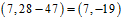, т. е. лежит на нижней ветви эллиптической кривой.
Рассмотрим пример сложения двух точек (2,4) и (7,19):
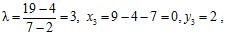
т. е. 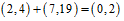, что прекрасно иллюстрирует геометрическую интерпретацию закона сложения.